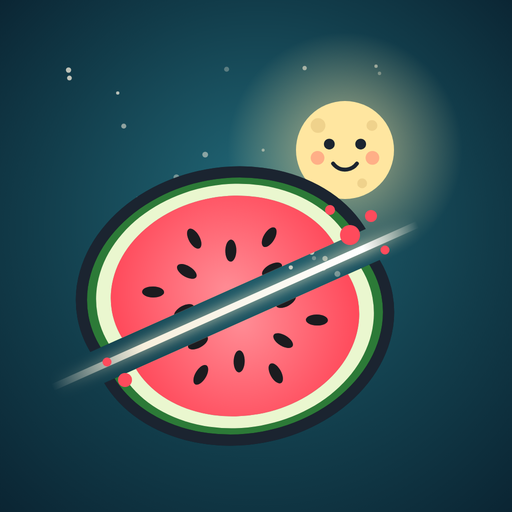

משחק לילדים בגילאי 3 עד 6
הפירות שלי
חותכים פירות ביום או בלילה, סופרים יחד עם השמש והירח, ומקבלים עידוד בעברית, ברוסית ובאנגלית.
בלי פרסומות
בלי הרשמה
עובד בלי אינטרנט
עברית · Русский · English
פתחתם מתוך פייסבוק
מתוך האפליקציה הזו אי אפשר להתקין. פותחים את הקישור בדפדפן הרגיל של הטלפון, וממשיכים משם.
לוחצים על ⋯ או על סמל המצפן בפינת המסך, ובוחרים לפתוח בספארי (Open in Safari).
פתיחה ב-Chrome
הקישור הועתק. מדביקים אותו בשורת הכתובת של הדפדפן.
מעתיקים את הקישור:
פותחים במחשב?
סורקים את הקוד עם המצלמה של הטלפון או הטאבלט, ומתקינים משם לפי השלבים כאן למטה.
התקנה בטלפון או בטאבלט
- פותחים את הדף בספאריאם הוא נפתח בתוך וואטסאפ או פייסבוק, עוברים קודם לספארי.
- לוחצים על כפתור השיתוף ב-iOS 26 הוא נמצא בתפריט ⋯ שליד שורת הכתובת.
- בוחרים ״הוספה למסך הבית״Add to Home Screen. אם לא רואים את האפשרות, גוללים מטה ברשימה.
- לוחצים ״הוספה״משאירים את ״פתיחה כאפליקציית רשת״ מסומן (Open as Web App). אפשר גם לשנות את השם, למשל ״הפירות של יונתן״.
ההתקנה לוקחת כמה שניות, בלי חנות ובלי הרשמה.
- פותחים את הדף ב-Chrome או ב-Samsung Internetאם הוא נפתח בתוך וואטסאפ או פייסבוק, עוברים קודם לדפדפן.
- ב-Chrome: לוחצים על ⋮ובוחרים ״התקנת אפליקציה״ או ״הוספה למסך הבית״ (Install app / Add to Home screen).
- ב-Samsung Internet: לוחצים על ☰ובוחרים ״הוספת דף אל״ ואז ״מסך הבית״ (Add page to › Home screen).
- מאשרים ״התקנה״הסמל ״הפירות שלי״ יופיע במסך הבית.
מותקן. פותחים את ״הפירות שלי״ ממסך הבית.
מה שונה במשחק הזה
-
סוף טבעיהסל מתמלא לאט, וכשהוא מלא המשחק נגמר בעצמו. בלי ספירה לאחור.
-
בלי לחץ להמשיךאין פרסומות, אין פרסים יומיים ואין דמות שקוראת לחזור.
-
שבח על המאמץ״אתה מתאמן ומצליח״ במקום ״אתה אלוף״.
-
סופרים ולומדים יחד״אתה יכול למצוא 3 פירות אדומים?״ והדמות סופרת איתו בקול, בשלוש שפות.
-
״עצור!״מדי פעם הפירות קופאים לכמה שניות, ומחכים יחד. משחק עצור-וזוז שמתרגל שליטה עצמית.
-
זזים בסוףקופצים כמו קנגורו וסופרים עד 5, ואז שאלות להורים ורעיון לפעילות בלי מסך.
-
פינת הוריםשם הילד, גיל, אורך סבב, אילו משחקי למידה פעילים, מקסימום יומי ונעילה לפני השינה, מאחורי שאלת חשבון.
המשחק לא אוסף מידע ולא שולח שום דבר. ההגדרות נשמרות רק במכשיר שלכם.